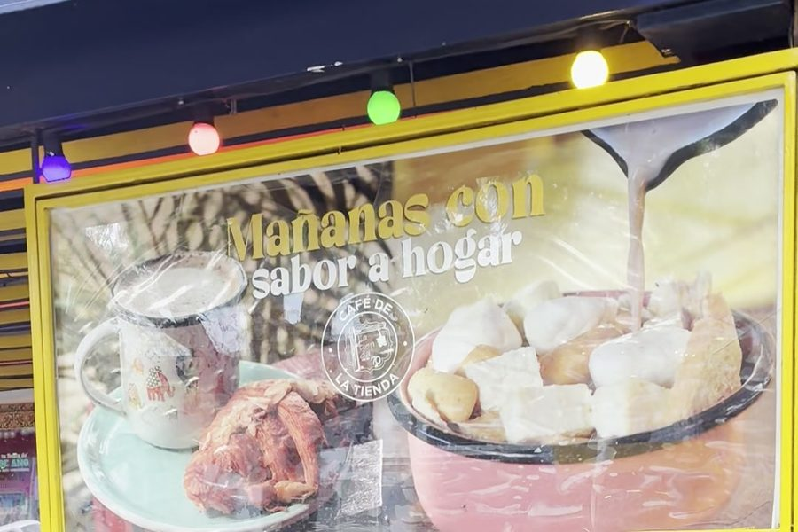
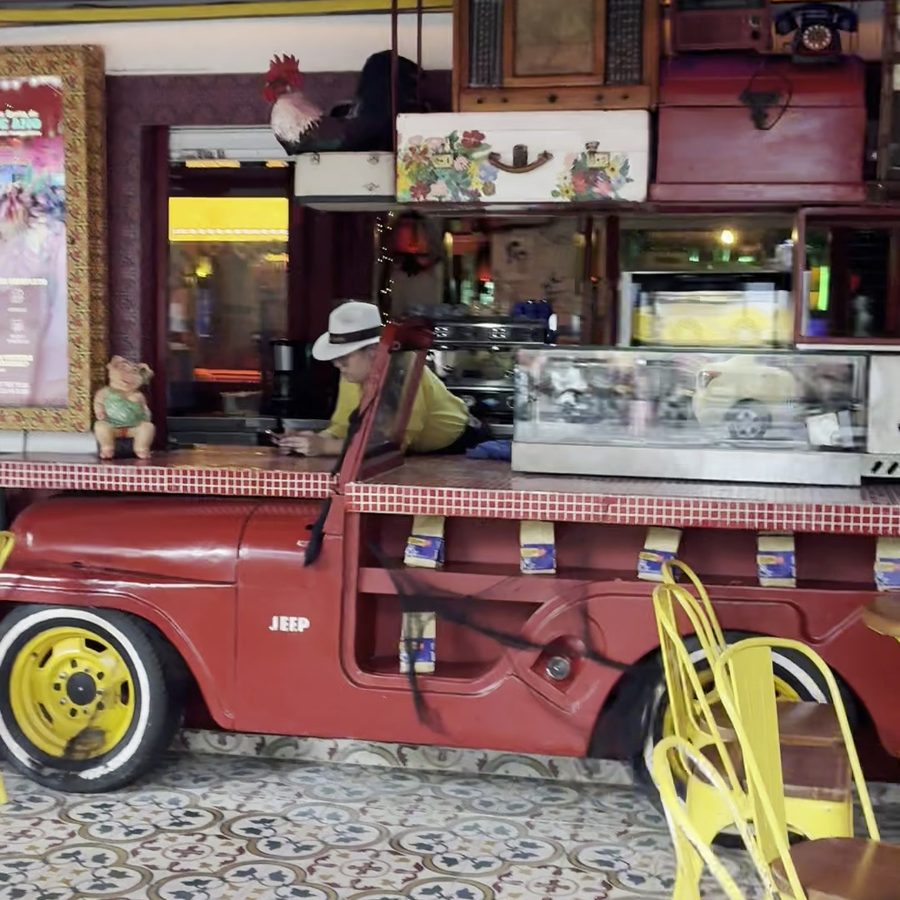
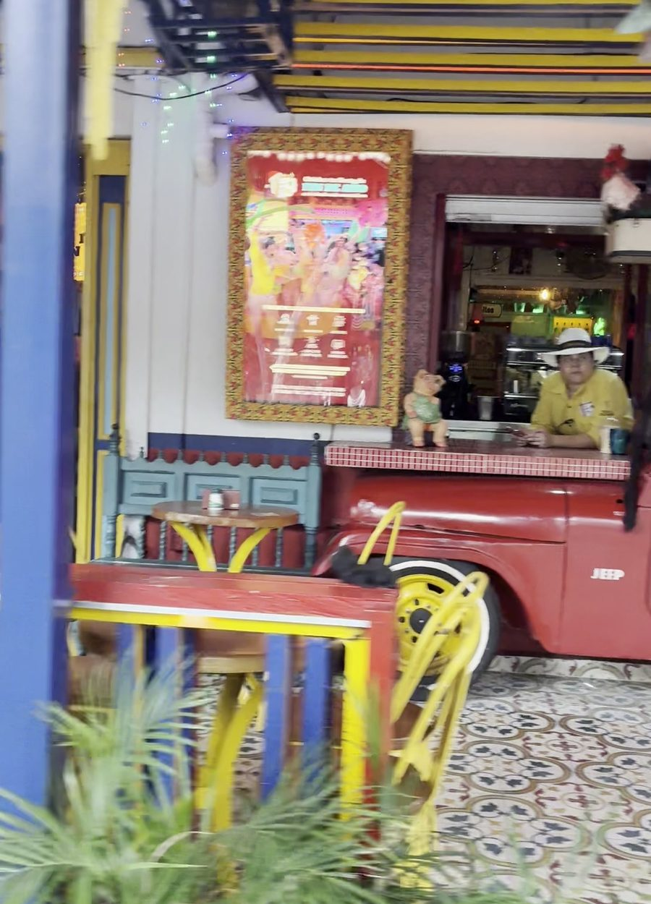
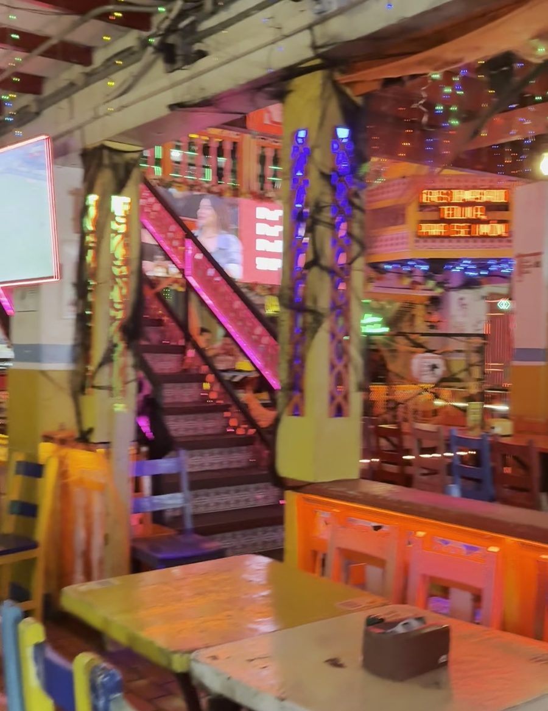

De día tienda. De noche fonda. Siempre con sabor a hogar.
Pase, pase, que aquí hay de todo.
Guirnaldas, neón, mesas de colores y la música sonando. Así se vive la noche en La 70.

Arrancá el día como en la casa de la abuela: un tinto caliente o chocolate, algo de horno recién salido y la tienda abriendo sus puertas sobre La 70.
Nuestra barra es un jeep Willys rojo, el mismo carro que sube café por las montañas de Antioquia. Rines amarillos, baldosa de colores y sillas amarillas: pura tienda de pueblo en plena ciudad.

Mové la barra para ver cómo cambia la casa.


DíaNocheBarandas amarillas, azules y rojas, matas, bombillos de colores y una casa que se siente de pueblo en el corazón de Laureles.
Sobre La 70,
Laureles, Medellín
En la calle más parchada de Laureles. Llegá, sentate y pedí; para grupos grandes, preguntá por reservas.